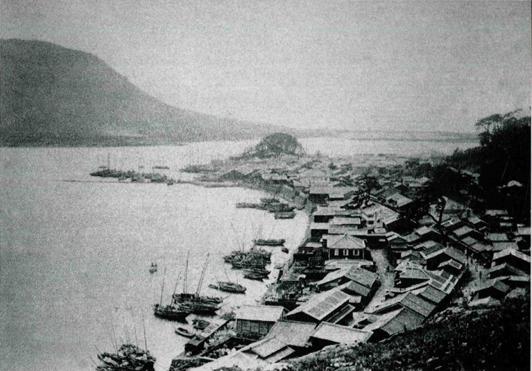
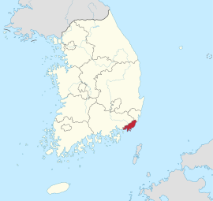
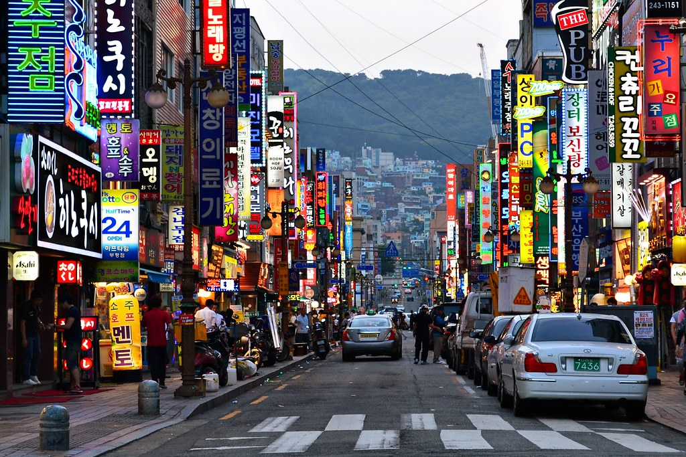

Informacion
Los primeros asentamientos en la zona datan del 18000 antes de Cristo, con una sociedad que subsistió gracias a la alfarería y la pesca
Está ubicada en el extremo sureste del país, limitando al norte con Gyeongsang del Sur, al noreste con Ulsan y al sur con el mar del Japón.
Es la segunda ciudad más grande de Corea del Sur por detrás de Seúl, con una población de aproximadamente 3,6 millones de habitantes.
